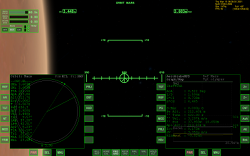
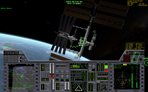

Orbiter Space Flight Simulator on GNU/Linux HOW-TO
Table of Contents
1 Introduction
{kind=link}

{kind=link}
{kind=link}

Orbiter (https://en.wikipedia.org/wiki/Orbiter_(simulator)) runs surprisingly well on GNU/Linux (from now on: Linux). Since the developer doesn't appear to be particularly interested in making Orbiter cross-platform, it is necessary to use the Wine compatibility layer (http://www.winehq.org/). This guide assumes that you have not used Linux before, but are interested in doing so for the purpose of, among other things, running Orbiter on it. It is probably impossible for this guide to be "complete" for everyone - it all depends on how comfortable you are with computers. If you're having trouble with some step, you're encouraged to use Google, ask in the Linux4Noobs subreddit (http://www.reddit.com/r/linux4noobs), or email me.
Written on 2012-11-24. Updated 2014-04-15.
2 Why Linux?
Linux…
- …is free, as in gratis
- …is free, as in the GPL licence allows you to do with it as you please (https://www.fsf.org/about/what-is-free-software)
- …is open source
- …isn't controlled by one person or corporation
- …has software repositories that allow you to install software easily and securely
- …has a large and friendly community, which you can be part of, or not
The same can be said for most software that runs on Linux
3 Requirements
- a PC that can smoothy run Orbiter with d3d9client on Windows
- an empty partition or unpartitioned space to install Linux on
- patience. Rome wasn't built in a day
4 Which Linux distribution?
To run Orbiter on Linux you will need to install Linux. Linux comes in "distributions", which are customized collections of Linux software. You can typically do anything on any distribution, but some tasks may be easier on some distributions than others.
I recommend Ubuntu, either
- Ubuntu (http://www.ubuntu.com/), installs a "modern" "touch-pad compatible" desktop with lots of bells and whistles
- Xubuntu (http://xubuntu.org/), installs a traditional desktop with menus and icons. Lighter on resources too
Personally, I prefer Xubuntu.
Whichever desktop you choose, you can install the other one (and many more) later easily and switch between them, so it doesn't matter which you start with.
5 Installing Linux
This is somewhat beyond the scope of this document, but the general procedure is
- download a Linux .iso image from the sites above
- burn the image onto a CD/DVD (which is not the same as "copying" the
.iso file onto the CD/DVD)
- Back-up all important data just in case!
- Set your BIOS to boot from CD-rom/DVD-rom first
- Insert the CD/DVD and (re)boot your PC
- Follow the on-screen instructions
For security and privacy I recommend encrypting your partitions by telling the installer to set up "encrypted LVM"
If you have a newer PC with UEFI instead(?) of a BIOS, the process should be similar.
6 Linux 101
Navigating the graphical UIs in Linux should be intuitive enough, but we'll be needing a terminal.
Find a terminal (there are many) in the applications menu of your
desktop and run it. It will open a window with username@computername:~$
in it. This is called a prompt. You type in commands and read their
output (if any). It might seem archaic but it's very powerful.
7 Installing and configuring WINE
Ubuntu's software repository has the stable branch of Wine, but we'll be installing the latest beta.
Open a terminal and run the following commands (one by one):
sudo add-apt-repository ppa:ubuntu-wine/ppa sudo apt-get update sudo apt-get install wine1.7
You now have Wine. Great.
Next run
winecfg
This will initialize Wine and open a configuration window. Set the Windows version to Windows XP. Enable "Emulate a virtual desktop" and set the resolution to something smaller than your screen resolution. Check that you have sound working by clicking Test Sound. Press OK to save and exit.
Next run
winetricks d3dx10 d3dx9_36 vcrun2005 corefonts
This will download DirectX and msvc redistributables that you need to run Orbiter (If only Windows was this convenient!)
8 Installing Orbiter
Download orbiter100830.zip from http://www.orbiter-forum.com/download.php and D3D9ClientR7.zip from https://d3d9client.codeplex.com/
Open a terminal and run
mkdir ~/.wine/drive_c/orbiter cd ~/.wine/drive_c/orbiter cp ~/Downloads/*.zip ~/.wine/drive_c/orbiter sudo apt-get install unzip unzip orbiter100830.zip unzip D3D9ClientR7.zip
That's it.
Some explanation is in order so you know what's going on. ~ is a short
way of refering to your user directory, which will be /home/username.
Wine creates the .wine directory in your user directory to store
everything in. The dot . in .wine means it's a hidden directory, so it
won't be visible in your file manager unless you ask it to display
hidden files (they're hidden to avoid clutter). The Wine C:\ drive is
stored completely in ~/.wine/drive_c/, so when you access C:\ in an
application running in Wine, that's where the files actually are.
The first command creates the directory ~/.wine/drive_c/orbiter. The
second changes the current active directory to that directory. The
third copies any zips in ~/Downloads, where firefox saves files, to the
orbiter directory. The fourth installs unzip. The fifth and sixth unzip
the orbiter and d3d9client zips.
To find out more what Linux commands do, use man, e.g.
man mkdir
9 Running Orbiter
Open a terminal and run
cd ~/.wine/drive_c/orbiter wine Orbiter_ng.exe
click Modules, and click Expand all twice. Enable the D3D9Client checkbox.
click Video, and switch to full screen
click Parameters, uncheck Focus follows mouse
click Scenario and pick something. Anything.
click Launch Orbiter
play!
10 Refining the experience
10.1 More addons
Installing Orbiter addons should be fairly easy. Simply move the zip
files to ~/.wine/drive_c/orbiter and unzip them. Some MFD addons don't
seem to work in Wine, for example BurnTimeMFD. Oh well!
10.2 autojump
Since typing ~/.wine/drive_c/orbiter can get tedious, I recommend
installing autojump (apt-get install autojump). Then run j
~/.wine/drive_c/orbiter. From now on, you can cd into this directory by
simply running j orb. This is a fantastic tool for navigating directory
trees!
10.3 reverse-i-search
Another way to save time typing is to press Ctrl-R and then type a few
letters of the command you want to run (that you've already run
before). Ctrl-R will search through your history and recommend the
closest it finds. Then simply press Enter to run it. For example, if
you last ran wine Orbiter_ng.exe, then Ctrl-R and typing will should
recommend that command.
10.4 Backing up
The entire Wine "Windows installation" is stored in ~/.wine. This makes
it very easy to move between computers. Simply copy the entire
directory!
10.5 Different WINEPREFIX
It is possible to install Wine elsewhere than ~/.wine by setting
WINEPREFIX, e.g.
WINEPREFIX=/home/yourusername/wine-orbiter winecfg
will setup wine in ~/wine-orbiter instead of ~/.wine. This allows you
to have seperate instances of "Windows" for every game, with different
settings.
11 That's all!
If you have any questions or suggestions email me!